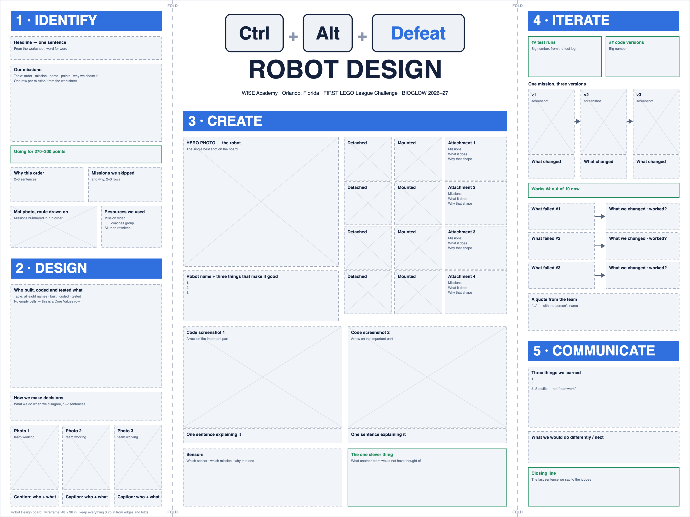
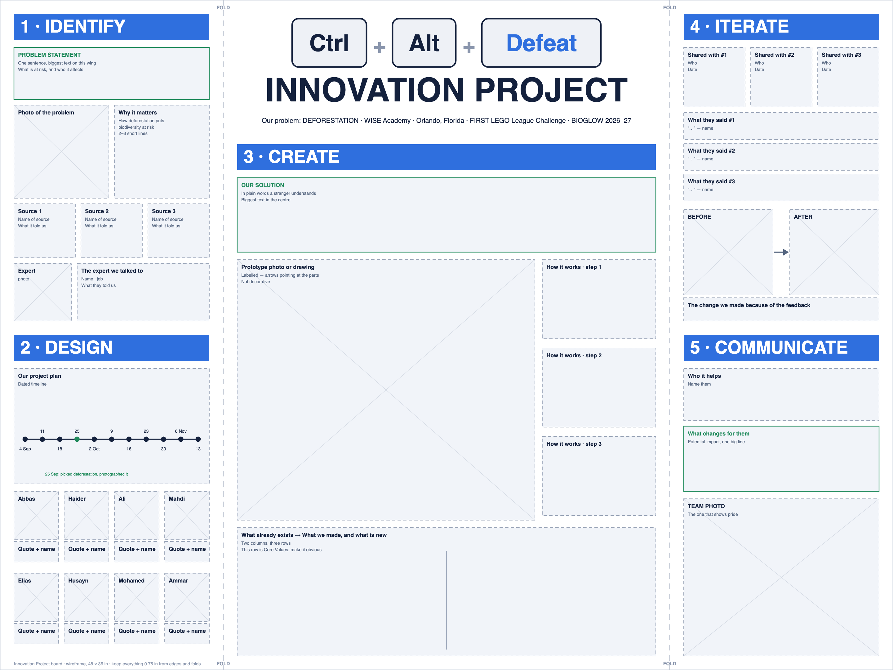

Today: both boards
Husayn and Ammar each build one trifold in Canva, alone, for the whole class. Everyone else's job feeds those two boards. Find your card, open your doc, and hand things in the moment you have them.
How to hand things in
Husayn
Board builderBuilds the Robot Design board
Far corner · alone · all class
- Build the board in Canva, step by step from his brief
- At 1:00 and 1:45, copy in what's new from the Robot Design worksheet
- Paste the Canva link in his brief
Ammar
Board builderBuilds the Innovation Project board
Opposite corner · alone · all class
- Build the board in Canva, step by step from his brief
- At 1:00 and 1:45, copy in Mahdi's words and Elias's photos
- Paste the Canva link in his brief
Mohamed
RedFills the Robot Design worksheet
Anywhere except the two corners
- Who built, coded and tested what, all eight→ Robot Design · Panel 2
- Every attachment, two photos each→ Robot Design · Panel 3
- Fix the mission list. M5 is missing→ Robot Design · Panel 1
- Every 30 minutes, copy what's new from the field docs
- Last 20 minutes: what we learned, closing line→ Robot Design · Panel 5
Mahdi
BlueWrites his talking points
Quiet spot · own laptop
- Every word he says in the judging room, timed out loud
- Problem statement and why it matters→ Innovation · Panel 1
- Who it helps and what changes for them→ Innovation · Panel 5
- Every source, with where it came from→ Innovation · Panel 1
Abbas
RedRed run order
Field · runs Red
- Pick the Red order and time each leg twice
- One full Red run, timed start to finish
- Why this order, 2–3 sentences→ Robot Design · Panel 1
- Missions we skipped, and why→ Robot Design · Panel 1
Ali
RedMission 8 Tangled
Field · Red
- Code M8 until it scores 3 times out of 5, then add it to the Red run
- Log every Red run as it happens→ Robot Design · Panel 4
- Two code screenshots, one sentence each→ Robot Design · Panel 3
- Sensors, and the one clever thing→ Robot Design · Panel 3
Haider
BlueForest Elder's extra 10
Field · runs Blue
- Get the M12 support tie. It's worth 30, not 20
- Three full Blue runs, timed
- M12 v1, v2, v3: what was wrong, what changed→ Robot Design · Panel 4
- How many times out of 10 M12 works→ Robot Design · Panel 4
Elias
BlueBlue runs and the team's photos
Field · Blue
- Log every Blue run as it happens→ Robot Design · Panel 4
- A photo of each of the eight, working→ Innovation · Panel 2
- Three photos of the team at work→ Robot Design · Panel 2
- At the bell, count today's runs→ Robot Design · Panel 4
Trifold designs
Click any panel to flip it and see what goes in each box. Panels follow the judges' own words, because that is the order they tick the rubric in.
Robot Design
Husayn designs it today / Mohamed fills the worksheet1 / IDENTIFY2 of 5
- Headline
- Six missions and why
- Missions we skipped
- Resources we used
- Mat photo with route
"We finished seven missions, all of them are easy but they give many points."
M11 easy. M6 good points, not too hard. M12 close to starting. M1 easy. M3 close to starting. M8 good points. M10 easy.
Seven of the fifteen are untouched. Naming two or three with a reason shows the choice was deliberate.
Comes from Ammar's resource log, which has no entries yet. This is a Core Values row.
One photo, route drawn on, six missions numbered.
2 / DESIGN0 of 3
- Who built or coded what
- How we decide
- Three photos of real work
All eight names, something real against each. Haider owns the grid. An empty cell here costs a Core Values row.
One or two sentences on what happens when people disagree. Judges ask this out loud.
People actually building, not posing.
3 / CREATE, centre0 of 5
- Hero photo of the robot
- Each attachment, two photos
- Sensors and why those
- Two code screenshots
- The one clever thing
The single best shot. This is the middle of the board, so it carries the most weight.
Detached on the table and mounted on the robot. Judges ask to see both.
Which sensor on which mission, and why that one rather than another.
With an arrow pointing at the important part. A plain screenshot scores less.
Every team shows code. What did we do that another team would not have thought of.
4 / ITERATE, biggest0 of 4
- Total test runs
- Version 1 to 2 to 3
- Three failures and fixes
- A quote, with a name
A real number, in large type. Comes from Husayn's test log, which has no rows yet.
One mission shown three ways with what changed between each.
Use the real wording from the log, not a cleaned up version.
Named quotes are evidence that everyone contributed.
5 / COMMUNICATE0 of 3
- Three things we learned
- What we would do differently
- Closing line
Specific. Not "we learned teamwork." Something nobody knew in September.
Honest beats impressive here.
The last sentence said to the judges. Both Communicate rows are Core Values rows.
Canva layout, to scale · 48 × 36 in

ITERATE gets two thirds of the right wing, because it's where most teams lose points. Same fonts, colours and header as the Innovation board, so the pair matches.
Innovation Project
Ammar designs it today / Mahdi writes the words / deforestation1 / IDENTIFY2 of 4
- Problem chosen
- Photo of the problem
- Problem statement
- Research, three sources
Deforestation. Picked 25 September.
Taken in class.
One sentence every student can repeat, naming what is at risk and who it affects.
A variety, not five of the same kind. One named person counts for more than any website. This is a Core Values row.
2 / DESIGN0 of 2
- Project plan
- All eight involved
A dated timeline showing the work actually happened over weeks.
Photos and quotes attributed by name. Core Values row.
3 / CREATE, centre0 of 3
- The solution
- Prototype or drawing
- What makes it new
What we are proposing against deforestation, in plain language a stranger understands.
Physical build, detailed drawing, or a Tinkercad render. Abbas and Elias both know Tinkercad.
What already exists, and how ours differs. Core Values row.
4 / ITERATE0 of 3
- Who we showed it to
- What they said
- Before and after
Aim for three groups outside the team. Elias owns arranging these.
Written down with names, at the time.
One real change made because of feedback. This is the row teams most often score lowest on.
5 / COMMUNICATE0 of 3
- Who it helps
- Potential impact
- Team photo
Name them. Core Values row.
What actually changes for those people. Mahdi's closing 45 seconds.
The one that shows pride. Enthusiasm is literally a scored row on both rubrics.
Canva layout, to scale · 48 × 36 in

Every grey box is a labelled placeholder. Content drops in over the coming weeks without the layout moving.
Run order
The sequence each squad runs inside a 2:30 match. Blue has theirs written down with timings. Red has three missions chosen but no recorded order.
Blue 90 points
Red 80 points
Running throughout
All fifteen missions
Click a mission to flip it. Eight are in the plan, seven are untouched, and the dashed cards are the ones nobody has looked at. Everything together is 530 points. We are planning for 260.
Drone Survey
Drone off the mat 20, LiDAR map flipped with the scan marker in the survey area plus 10.
Red rates this easy, though the bonus is the harder half. Back in September, Elias and Ali both wrote it off as low value and hard, yet it stayed in the plan.

Exploding Seeds
10 for each of three seeds no longer touching the stalk.
Rated "mid value, relatively easy, 30 points for not much work" by both Elias and Ali. Nobody has tried it.
Flip the Rock
Research flag down 20, rock returned to its starting position plus 10.
Red rates this hard. Measured at 4 to 5 seconds, the fastest timing we have.

Lucky Leaves
First leaf off the nest 10, second leaf off with the katydid still in place plus 20.
The only mission that can score zero after you do the work. The leaves are randomised and you are not told where the katydid starts. If it ends up completely outside the leaf habitat, the whole mission scores nothing. Late season at the earliest.
Reaching Roots
Partially extended 10, or completely extended 20.
There is no bonus here. The Red game plan has it as 10 plus a 10 bonus. It scores 10 or 20, never both. Aiming for a bonus that does not exist means building the wrong attachment.

Leafcutter Frenzy
Ant touching the nest, then 10 for each of four leaf fragments inside it.
Highest value mission on the plan, and the only one with real timings: 7.10s and 8.99s. Every student rated it top tier.

Humongous Fungus
Mycelium fully extended 20, plus 10 for each connection with the opposing team's extended root.
Only 20 of this is in our control. The other 20 depends on the opposing team fully extending their root, so treat it as a 20 point mission with upside.
Tangled
Vine touching the mat. One action.
Best points per line of code on the whole board, and in neither squad's plan. All eight students independently rated it top tier in September. Elias: "amazing value, do this as early as possible."

Research Platform
Platform raised 10, camera trap deployed 10, seed off the tree 10.
Thirty points in one location. Three separate conditions clustered together, so even two of the three is worth the trip. Elias and Ali both called it "solid value, multiple bonuses." The strongest mission we are not attempting.
Fragile Microhabitats
Spider and snail habitats left in their starting positions, 10 each.
No code and no launch. Twenty points for not hitting anything, which means every other route has to stay clear of them. Three students wrote this down as 30 points. It is 20.
Window to the Past
Root cover down, touching the mat.
Rated 3 out of 10, the easiest on the plan, and first in the Blue run order. Ali and Elias both logged it as Mission 7 by mistake, which is Humongous Fungus.

Forest Elder
Cane raised touching the tree 20, support tie around the post 10.
Rated 8 out of 10, the hardest on the plan. The Blue game plan logs this as 20 points. It is 30. The support tie is a separate scoring line, not a bonus, so they are writing off 10 points they could have.

Keystone Species
Our own keystone species model on the restoration platform, young trees raised.
We build the model ourselves from bag 20. It counts as equipment and goes through pre match inspection, so the referee will ask us to identify it.
Seeds of Renewal
5 for each of four seeds in the replantation station, plus 5 each if also touching the mat.
Forty points but spread across eight separate conditions, so partial credit comes easily. Mohamed and Ammar both logged it as 30.
Biocentric Architecture
Canopy raised 10, skylight in 10, compost hatch open 10, plus a 10 environmental bonus.
Do all three actions and the dock position stops mattering, because the bonus scores from whichever dock the model sits on. Mohamed and Ammar both logged this as 60 points. It is 40.
Equipment inspection
Robot and all equipment inside one launch area, under 12 inches.
Worth more than Window to the Past and takes thirty seconds to practise. The pack down should be identical every single time.
Precision tokens
Six at the start. Six or five left both pay 50.
The first interruption outside home is free. The second costs 15, more than Mission 11 is worth. After that: 4 tokens is 35, 3 is 25, 2 is 15, 1 is 10. Wait the extra two seconds for the robot to come home.
The eight
Squad colour is the home area at the table. Rule 11 locks sides for the whole match, so it applies to bench members too. Photos go in docs/avatars/, initials show until then.

Siraj Abbas Yusufali
Team lead, lead technician Red
- Owns
- Mission board accuracy
- Speaks
- Robot design questions

Ali Hasham
Engineer, coder Red
- Owns
- Code and weekly screenshots
- Speaks
- Robot design questions

Mohamed Dharsi
Engineer, attachment runner Red
- Owns
- Robot Design board
- Speaks
- Robot design explanation

Husayn Bhimji
Builder, field checker Red
- Owns
- Test log
- Speaks
- Innovation, the solution

Haider Fahar
Team lead, lead technician Blue
- Owns
- Who built what grid
- Speaks
- Robot design, testing

Elias Mouri
Technician Blue
- Owns
- Outside feedback sessions
- Speaks
- Innovation, feedback loop

Mahdi Jessa
Coder, scorekeeper Blue
- Owns
- Innovation Project board
- Speaks
- Innovation, opens and closes

Ammar Hamza
Speaker, spotter Blue
- Owns
- Resource log
- Speaks
- Welcome hook and research